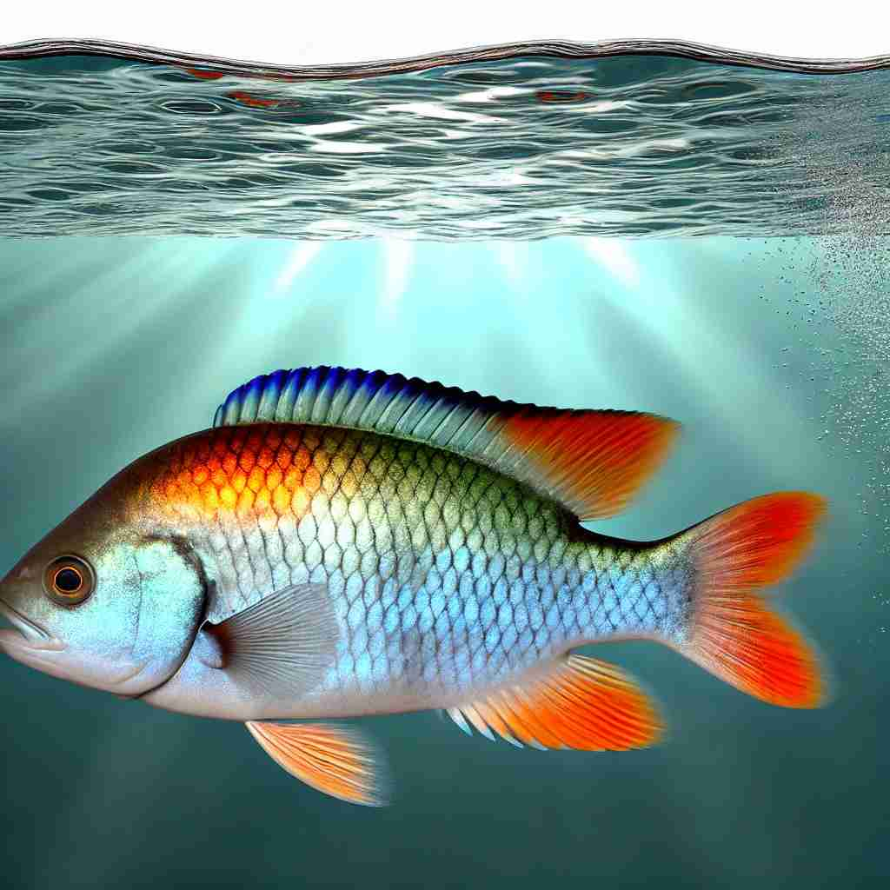

💬 The colorful fish swimming in the aquarium are very beautiful.

💬 The man is excited to catch a fish from the lake.

💬 The colorful fish swims in the clear water.
💬 Children love to watch the fish in the aquarium.
🔈 [fɪʃ]
🗝️ n. a cold-blooded animal that lives in water and breathes with gills
🖼️ 在一个宁静的湖泊中，多彩的鱼儿在清澈的水中游动。它们用鳃呼吸，悠闲地在水草间穿梭，展现了fish作为水中冷血动物的含义。
🔍 想象一条鱼在水中游动。这个核心意象既可以是实物（活鱼或食物），也可以引申为动作（捕鱼或搜寻），甚至可以比喻人。通过这个生动的形象，你可以轻松联想和记忆'fish'的各种用法。
💬 The colorful fish swimming in the aquarium are very beautiful.
💬 The man is excited to catch a fish from the lake.
💬 The colorful fish swims in the clear water.
💬 Children love to watch the fish in the aquarium.
🌳 词根词缀分析不适用于简单词 "fish"，它本身就是一个基本词，表示鱼。这类单词通常不通过词根词缀进行拆分。
💡 可以联想为在海洋或河流中游泳的生物，通过观察实际的鱼类来记忆这个词。同时可以结合捕鱼活动来加深理解。
🗝️ n. the flesh of fish used as food
🖼️ 在一个热闹的市场里，摊贩们正忙着切割新鲜的鱼肉。空气中弥漫着鱼的鲜香，顾客们挑选着准备回去做晚餐，这展示了fish作为食物的含义。
💬 I'm cooking fish for dinner tonight.
❓ 从动物延伸到其肉质
🗝️ v. to try to catch fish
🖼️ 在一个安静的河边，一个渔夫坐在河岸上，手持钓竿耐心地等待。他的目光专注于水面，期待着鱼上钩，诠释了fish作为一种捕鱼活动的含义。
💬 They went to fish in the nearby lake.
❓ 捕捉鱼的动作
🗝️ v. to search for something
🖼️ 在一个热闹的办公室里，员工们正忙着在文件堆中寻找重要的合同。一个员工边翻动文件边自言自语："我得继续fish for那份文件。"这体现了fish作为搜索的含义。
💬 He was fishing for compliments.
❓ 类比捕鱼时在水中摸索的动作
🗝️ n. a person of a specified kind
🖼️ 在一个轻松的社交聚会上，朋友们谈论着他们的性格。一个人打趣地说道："他这个人真是个怪鱼，总是有些古怪的想法。"这展示了fish作为特定类型的人的含义。
💬 He's a big fish in a small pond.
❓ 比喻用法，将人比作鱼